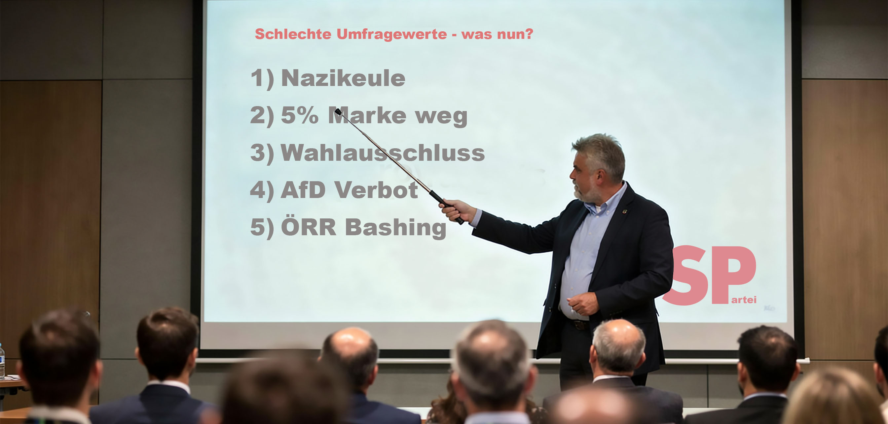

Die Hürde, die plötzlich stört

Fünf Prozent waren lange die Eintrittskarte in den Landtag.
Wer darunter blieb, hatte Pech gehabt. Man sprach von Stabilität. Von Schutz vor Zersplitterung. Von Weimar. Die Regel galt. Gerade weil sie unbequem sein sollte.
Jetzt steht die SPD in Sachsen-Anhalt in einer aktuellen Umfrage bei fünf Prozent. Die Grünen bei vier. Die AfD bei 41.
Und plötzlich wird die Hürde selbst zum Problem.
Armin Willingmann, SPD-Spitzenkandidat und Vize-Ministerpräsident, will über eine Absenkung auf drei Prozent diskutieren. Regelmäßig blieben Stimmen knapp unter der Sperrklausel unberücksichtigt, sagt er. Das sei nicht mehr zeitgemäß.
Bei drei Prozent wären nach der aktuellen Umfrage Grüne, FDP und BSW im Landtag. Bei fünf Prozent blieben sie draußen. Die Zahl der Parteien würde wachsen. Die Zahl der nicht berücksichtigten Stimmen sinken.
Und eine absolute Mehrheit der AfD würde rechnerisch deutlich schwieriger.
Genau darum geht es jetzt.
Als das BSW bei der Bundestagswahl mit 4,981 Prozent und 9.529 Stimmen Abstand an der Hürde scheiterte, war die Regel kein Problem.
Das BSW verlangte wegen möglicher Zählfehler eine Neuauszählung. CDU/CSU, SPD, Grüne und Linke lehnten sie im Wahlprüfungsausschuss ab. Der SPD-Justiziar Johannes Fechner erklärte, es gebe keine Zählfehler, die eine Neuauszählung begründeten. Die Grünen lobten die Wahlprüfung als gewissenhaft und überparteilich.
Ein BSW-Einzug hätte Schwarz-Rot die eigene Mehrheit genommen.
Damals war die Hürde stabil. Jetzt, da SPD, Grüne, FDP und BSW in Sachsen-Anhalt selbst an ihr kratzen, soll sie plötzlich kleiner werden.
Ein Prinzip ist das nicht. Es ist ein Werkzeug.
Die SPD will nicht besser werden. Sie will leichter wieder hineinkommen.
Das ist das Muster dieser Jahre.
Und wenn die Wähler trotzdem nicht so wählen, wie sie sollen, wird an der nächsten Stellschraube gearbeitet: an der Regel, die entscheidet, wer nach der Wahl überhaupt im Parlament sitzt.
Warum war die Hürde jahrzehntelang eine Schutzmauer gegen Zersplitterung und wird ausgerechnet jetzt zum Problem der Demokratie?
Die Antwort steht in der Umfrage.
Alles wird versucht. Beobachtung. Ausschluss. Etikettierung. Die ungleiche Bühne. Jetzt die Wahlregel.
Nur eines nicht: Politik machen, die Menschen wählen wollen.
Mehr dazu: Gewählt, aber nicht wählbar und Alle böse zu Fritz.